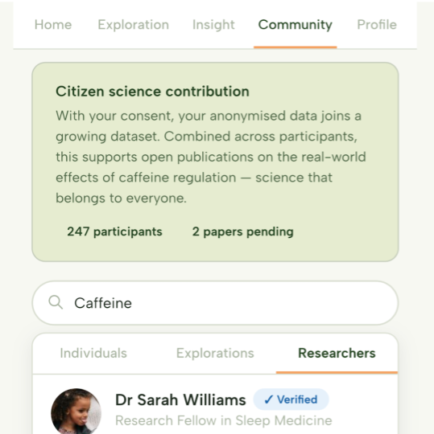
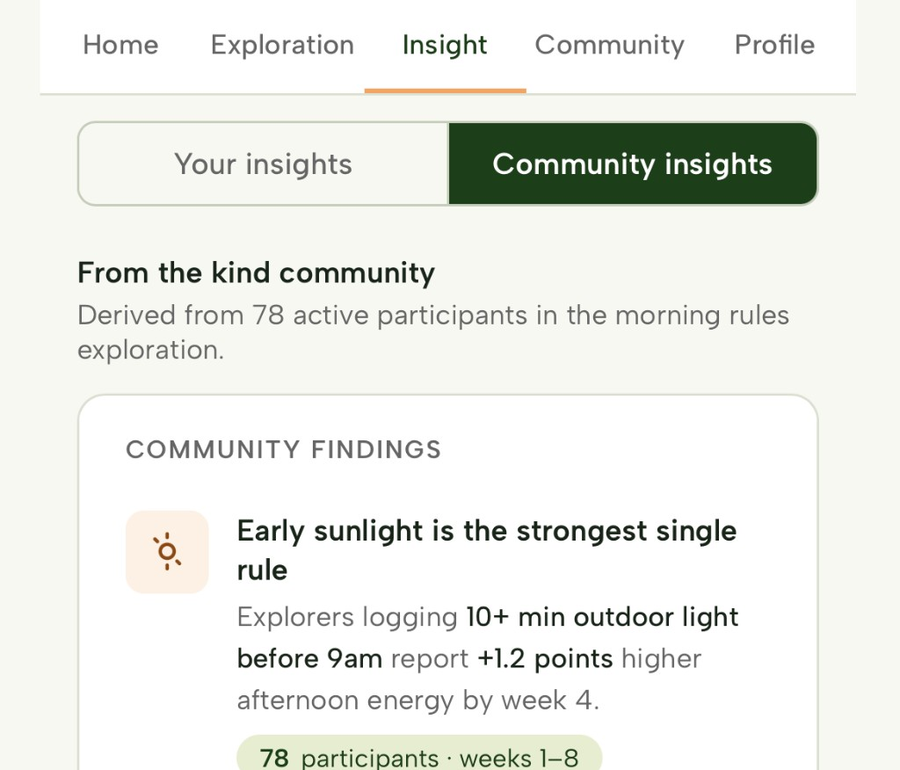
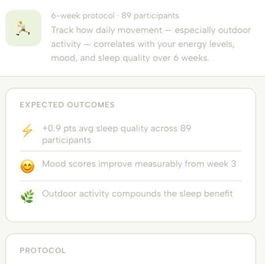

Kind gives academics, scientists, and health advocates a platform to share evidence-backed interventions, recruit willing participants, and generate publishable insights from real-world data.
Clinical trials are expensive, slow, and often test a single therapy on a population average. Real-world data is abundant but scattered and hard to use. Kind changes that.
A single clinical trial can take years and cost millions. Kind enables rapid, real-world exploration of interventions with consenting participants who are already motivated to try them.
Getting individuals to try interventions and share meaningful data is time-consuming and expensive. Kind's community of engaged health explorers are actively looking for structured guidance.
Lab conditions rarely reflect how people actually live. Kind captures data in the real world — meals, sleep, exercise, and subjective wellbeing as they happen.
Publishing findings that reach and change behaviour at scale is difficult. Kind gives you a direct line to individuals who benefit from — and engage with — your research.
Whether you're in academia, a health advocacy organisation, or supporting a specific intervention — Kind has a role for you.
PhD students, postdocs, and faculty looking to gather real-world data, test hypotheses, and publish findings from citizen science explorations.
Organisations supporting people with chronic conditions or specific health challenges who want to promote evidence-based interventions to a receptive community.
Companies and practitioners behind health interventions who want to build a real-world evidence base and connect with people motivated to try their approach.
Cardiologists, psychologists, nutritionists, and other specialists who want to share their expertise through structured explorations and reach a wider audience.
Kind gives you the tools to design, deploy, and learn from real-world health explorations — with willing, consenting participants already on the platform.
Set up your profile with your credentials, institution, and areas of expertise. Build trust with the Kind community through transparency about your work.
Use Kind's tools to structure an intervention exploration — defining the exploration, tracking measures, duration, and eligibility criteria for participants.
Share your exploration with Kind's individual users. Those who match your criteria and consent to participate can join your study directly through the platform.
As participants complete your exploration, access anonymised, aggregated data through Kind's researcher tools — with full consent and ethical oversight built in.
Use Kind's AI-assisted analysis tools to identify patterns, generate N-of-1 insights, and prepare cohort and retrospective findings for publication.
Associate your name and institution with pre-print publications generated from Kind data. Share findings back to the community who helped create them.
Kind's individual users aren't passive research subjects — they're actively seeking interventions to try and are motivated to log their results carefully. This makes them unusually engaged and reliable participants.

Kind isn't just a data collection platform — it's a knowledge home. Publish curated content about your area of research, build a following among engaged health explorers, and be seen as a trusted voice.

Kind is built on rigorous data ethics and security practices. All participant data is anonymised, consent is explicit and granular, and every step is designed to meet the standards expected by academic institutions and regulators.

Kind launches with a focus on areas where individual motivation and research interest already overlap — giving researchers an engaged starting community.
Creatine, fasting protocols, HRV-guided training, and metabolic interventions across a motivated population actively measuring their energy levels.
Exercise, diet, and lifestyle interventions targeting body composition, heart rate and cardiovascular/metabolic markers in community populations.
Stimulant timing, blue light exposure, sleep schedule interventions, and supplementation approaches — to help get the most benefit from rest and sleep.
Dietary pattern changes, fibre, fermented foods, and microbiome-targeted interventions tracked across real-world dietary conditions.
Mindfulness, screen time, social media exposure, breathwork, relaxation and lifestyle-based mental health explorations.
Don't see your research focus listed? Join the waitlist and tell us what you're working on — we're actively growing our research partnerships.
Kind supports real-world, observational, and intervention-based explorations across a range of health domains. You can design structured explorations that individuals follow and track, gather anonymised data from consenting participants, run retrospective analyses across existing platform data, and publish pre-print findings associated with your name and institution. Kind is not designed for randomised controlled trials (RCTs) requiring clinical oversight, but it is well-suited to naturalistic studies, N-of-1 designs, citizen science explorations, and longitudinal observational work. If you're unsure whether your research question is a good fit, get in touch and we'll discuss it.
Researchers access anonymised, aggregated data from participants who have explicitly consented to share their data for research purposes. This includes exploration adherence data, self-reported outcome measures, and any tracking data participants have chosen to link (such as wearable data). Individual-level data is never identifiable. The specific data available will depend on the exploration design and what participants have consented to share. Kind's researcher dashboard provides tools to query, visualise, and export data in formats suitable for analysis.
Once your exploration is published on Kind, eligible individuals are surfaced it through the AI matching system based on their profile and goals. You can define eligibility criteria (e.g. age range, health profile, existing conditions to exclude) and the platform will match participants accordingly. Individuals choose to opt in — they're never assigned to a study without their knowledge and explicit consent. Kind's community of engaged health explorers means recruitment is significantly faster and more cost-effective than traditional approaches, particularly for lifestyle and supplementation interventions where motivation is key to adherence.
We're actively building the platform and recruiting research partners ahead of the public beta, planned for late 2026. Early research partners will have the opportunity to co-design the researcher experience, contribute the first wave of explorations, and have their content and explorations featured prominently as the community grows. If you join the researcher waitlist, we'll be in touch to discuss how you could be involved in the early partnership phase — which will run from Q3 2026 ahead of the broader beta launch.
We're actively recruiting research partners to co-design our platform and contribute the first wave of explorations. Join the waitlist to be part of it.